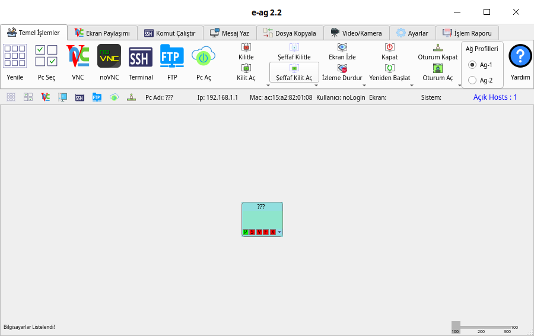

e-ag¶
Yerel bir ağdaki(lan) bilgisayarların kontrol ve yönetimini yapabileceğiniz veyon, epostes vb. bir yazılım.
{kind=link}
Yazılımla yapabilecekleriniz;
Açık olan bilgisayarlara linux komutlarını aynı anda çalıştırabilirsiniz.
Birden fazla bilgisayara aynı anda dosya kopyalayabilirsiniz.
Bütün bilgisayarlara ya da tek bilgisayarın ekranına mesaj gönderebilirsiniz.
Bütün bilgisayarları ya da tek bilgisayarın ekranını kilitleyebilirsiniz.
Bütün bilgisayarları ya da tek bilgisayarı kapatabilirsiniz.
Bütün bilgisayarları ya da tek bilgisayarı güncellemeler yapabilirsiniz.
Açık bilgisayara ftp erişimi yapılabilir.
Açık bilgisayarın ekranına erişim ve kullanma.
Video yayını yapabilirsiniz.
Canlı kamera yayını yapabilirsiniz.
Açık olan kullanıcı masaüstüne dosya kopyalama ve geri toplayabilirsiniz.
İstediğiniz bilgisayarları seçip sadece seçili olanlara işlem yapabilirsiniz.
Uzak bilgisayarın yönetici hesabına script kopyalayıp server üzerinden çalıştırabilirsiniz.
Server bilgisayarın ekranını yansıtma
{kind=link}
{kind=link}
{kind=link}
{kind=link}
{kind=link}
{kind=link}
{kind=link}
{kind=link}
Paket Ve Kod